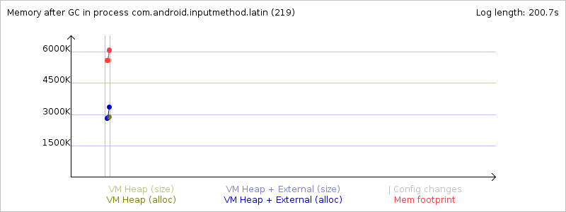
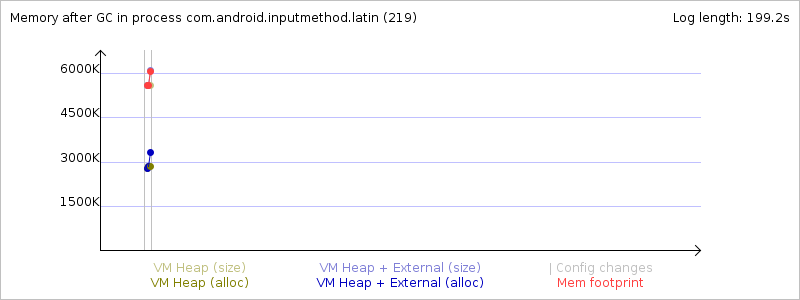

Mem info from 'meminfo' service:
** MEMINFO in pid 219 [com.android.inputmethod.latin] **
native dalvik other total
size: 4392 5639 N/A 10031
allocated: 3730 3072 N/A 6802
free: 17 2567 N/A 2584
(Pss): 1161 975 2943 5079
(shared dirty): 1000 1740 5336 8076
(priv dirty): 1120 264 2500 3884
Objects
Views: 0 ViewRoots: 0
AppContexts: 0 Activities: 0
Assets: 2 AssetManagers: 2
Local Binders: 7 Proxy Binders: 21
Death Recipients: 1
OpenSSL Sockets: 0
SQL
heap: 125 MEMORY_USED: 125
PAGECACHE_OVERFLOW: 8 MALLOC_SIZE: 50
DATABASES
pgsz dbsz Lookaside(b) Dbname
1 4 21 auto_dict.db
1 5 17 userbigram_dict.db
Memory usage from GC system logs:
Memory usage from GC event logs:
